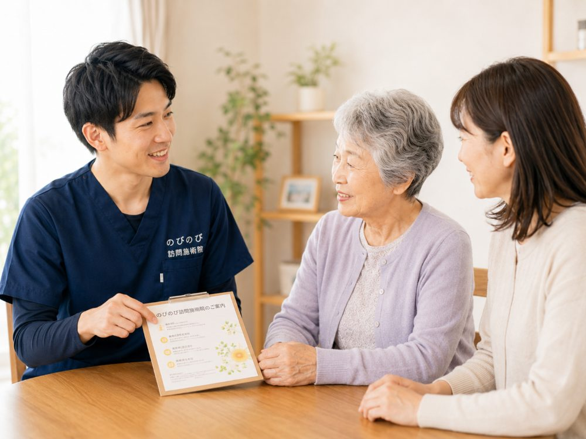

家に鍼灸の施術者が来ると聞くと、「どんな人が来て、体に鍼を打つのだろう」と身構える方はめずらしくありません。相手の顔も資格も分からないまま、体を任せるのは不安なものです。のびのび訪問施術院で保険の施術を行うのは、国家試験に合格した「はり師」「きゅう師」です。その資格がどんなもので、何を学んでいるのか、衛生面はどうか、信頼できる相手をどう見分けるかを、順を追ってお伝えします。
先に要点を。のびのびの保険の施術は、すべて国家資格を持つはり師・きゅう師が担当します。養成校で体のしくみや衛生、リスクの見極めを学び、国家試験に合格した人だけが名乗れる資格です。医療保険を使うには、この資格に加えて医師の同意も必要になります。鍼とお灸を中心に、無理のない範囲の手技や機能訓練も組み合わせます。これらについて別途の料金はいただきません。慢性的な痛みなどについて医師が必要と認め、通院がむずかしい場合は保険の対象で、1割負担の方は1回およそ395円（総額3,950円）が目安です。
はり師・きゅう師は、国家資格です
のびのびで保険の施術を行うのは、「はり師」「きゅう師」という国家資格を持った施術者です。この二つは、専門の養成校で数年間学んだうえで国家試験に合格した人だけが名乗れます。思いつきや見よう見まねで鍼を扱えるものではなく、体のしくみや病気の知識、衛生管理、施術を避けるべき状態の見極めまでを身につけた人が施術にあたります。
訪問という形であっても、この資格の裏づけは施術所と変わりません。ご自宅にうかがうのは、国家試験というひとつの関門を通った専門職だと考えていただければと思います。
養成校で、何を学ぶのか
はり師・きゅう師になるには、解剖学や生理学といった体のしくみ、東洋医学の考え方、鍼やお灸の技術、そして衛生や安全について、養成校で系統立てて学びます。ツボの位置や手の動かし方だけでなく、その奥にある体の理屈まで理解したうえで施術する、という順序が身についていきます。
学びの柱のひとつが、「どんなときに施術を控え、医療機関へつなぐべきか」という判断です。鍼灸で無理をせず、まず医師に診てもらったほうがよい状態を見分けられること。これは、体を任せる側にとって案外大きな安心材料になります。
保険を使うには、医師の同意も必要です
国家資格を持っているだけでは、医療保険での施術はできません。慢性的な痛みなどについて、かかりつけの医師が「鍼やお灸による治療が必要」と認め、同意書を出してくれることが条件になります。医師の判断と、国家資格を持つ施術者の技術、その両方がそろって、はじめて保険の施術が成り立ちます。
この同意書をそろえる手続きは、のびのびが力になれればと思います。何をどう用意すればよいか分からないという方も、状況をうかがいながら一緒に進めますので、身構えなくて大丈夫です。
衛生面は、どうなっている？
訪問での施術でも、衛生管理は施術所と同じように行います。鍼は使い捨ての清潔なものを一人ひとりに使い、使い回すことはありません。施術の前後には手指の消毒を行い、清潔な器具で施術します。ご自宅にうかがう際は、清潔なタオルや使い捨ての用具を持参し、お部屋を汚さないよう配慮します。
持病やお薬、体内に入れている医療機器などがある方は、事前にお伝えいただければ、体の状態に合わせて安全に配慮しながら進めます。気になることは遠慮なくお話しください。それが、その方に合った進め方を決める手がかりになります。
手技や機能訓練も、できる範囲で
施術は鍼とお灸が中心ですが、それに加えて、こわばった筋肉をほぐす手技や、関節をやさしく動かす機能訓練も組み合わせます。これらは鍼灸に加えて行うケアで、追加料金はいただきません。その方の体の状態やご希望に合わせて、無理のない程度に行います。
強い刺激ほど効く、というものではありません。かえって体が疲れてしまう方もいらっしゃいます。心地よいと感じられる加減を、その日の様子を確かめながら一緒に探していきます。
信頼できる施術者を見分けるには
初めて頼むときは、資格や施術内容、料金の説明をきちんとしてくれるかを見ると安心です。その月の明細を出す、できることとできないことを正直に伝える、医療機関との連携を大切にする。こうした姿勢は、任せてよい相手かどうかの手がかりになります。分からないことを遠慮なく質問でき、その答えに納得できるかどうかも、ひとつのものさしです。
反対に、必要以上に回数を増やそうとする、覚えのない料金が上乗せされる、やめたいと伝えても強く引き止める。そういうことがあれば、いったん立ち止まって考えてよいサインです。安心して任せられる相手かどうかは、日ごろの対応の積み重ねにあらわれます。
訪問だからこそ、じっくり体をみられる
施術所に次々と来られる方を順番にみるのとちがい、訪問では、その方お一人の体とじっくり向き合う時間があります。ご自宅での様子や、家の中での動き方、暮らしのなかでの困りごとまで見えるので、体のどこに負担がかかっているかを深くつかめます。
ご家族から日ごろの様子をうかがえるのも、訪問ならではです。国家資格をもとにした知識と、こうして得られる暮らしの情報を合わせて、その方に合ったケアを組み立てていきます。効果には個人差がありますが、その方の生活そのものを見られる強みは、通いの施術では得にくいものです。
訪問先でうかがったお話｜任せることについて
その日の進め方をお尋ねすると「おまかせします」と言われる方が多くいます。「なんでもあなた任せや。楽でええわ」と、笑って話された方もいました。
一方で「今日はもう入念にやっといてほしいから」と、施術が始まる前にはっきり希望を伝えてくださる方もいます。どちらも助かります。強さの好みは人それぞれなので、「ちょうどいい加減」かどうかをそのつど確かめながら合わせています。
料金と保険、ご利用までの流れ
のびのびの保険の施術は、はり師・きゅう師が、はり・きゅうの医療保険を使って行います。1回は総額3,950円、1割負担の方は1回およそ395円が目安です。安売りではなく、健康保険の制度にもとづく決まった料金で、別途の出張費や交通費はかからず、エリア内はどこでも同額です。たとえば週2回なら、ひと月およそ3,160円（1割の方）が自己負担の目安になります。この費用は医療保険で計算し、介護保険の限度額とは別の枠でまかなわれます。
まずはお電話などで、お体の状態や気になっていること、通院の様子、かかりつけの医療機関をお聞かせください。資格や施術の内容、料金についても、ご納得いただけるまでご説明します。同意書をそろえる手続きは当院が支えます。お支払いは月ごとにまとめてお願いしています。内訳はあとからでも確認いただけます。
よくある質問
施術者は本当に国家資格を持っていますか？
はい。保険の施術は、国家試験に合格した「はり師」「きゅう師」が行います。専門の養成校で体のしくみや衛生、リスクの見極めを学んだうえで施術にあたります。資格について気になる点は、遠慮なくお尋ねください。
資格があれば、それだけで保険で受けられますか？
国家資格に加えて、かかりつけの医師が鍼やお灸を必要と認めた同意書が必要です。医師の判断と施術者の技術、その両方がそろってはじめて保険の施術になります。同意書の手続きは当院が段取りします。
使う鍼は清潔ですか？
使い捨ての清潔な鍼を一人ひとりに使い、使い回すことはありません。施術の前後には手指の消毒を行い、訪問でも施術所と同じ衛生管理で進めます。清潔なタオルや使い捨ての用具も持参します。
信頼できる相手かどうか不安です。何を見ればよいですか？
資格や料金、できること・できないことをきちんと説明するか、月ごとに明細を出すか、医療機関と連携するかが手がかりです。反対に、覚えのない料金の上乗せや、強引な回数の積み増しがあれば立ち止まってよいサインです。
マッサージや機能訓練もしてもらえますか？
鍼とお灸を中心に、こわばった筋肉をほぐす手技や関節を動かす機能訓練も、組み合わせます。これらについて別途の料金はいただきません。その方の体の状態やご希望に合わせ、無理をしない形で行います。
費用はいくらくらいで、あとから追加請求はありませんか？
1回は総額3,950円、1割負担の方で1回およそ395円が目安です。別途の出張費や交通費はかからず、エリア内は同額。制度で決まった料金なので、あとから思わぬ請求が来ることはありません。